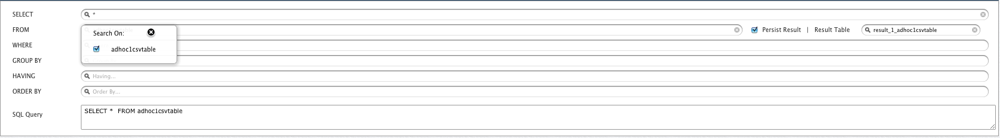
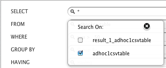

Querying Data: Hive
In this chapter
This chapter explains about Ad hoc analysis of different file formats.
CSV Hive Querying
- Go to Analytics > Query Designer
- Select AdHocDB in Database.
- There will be a new table adhoc1csvtable added in the FROM section. Select that table.
- The Result Table textbox will take its default value 'result_1_adhoc1csvtable'

- To provide filter expressions, use WHERE block. Select the attribute to be filtered and specify expression value through UI. (CPU > 50)

- Click View to fire query.
- AdHoc query will be executed and result is displayed accordingly.
- Once the query is executed and if the result is persisted, <Result Table> will be added to your FROM list and can be used further for querying.

- Also a folder with the same name (result_1_adhoc1csvtable) will be created on path /hive/ in HDFS. To see the added folder go to Data > Data Browser.
- This folder contains a file which contains the same result as in 'result_1_adhoc1csvtable'.
Persisting / Non-persisting the results
Hive provides the facility to persist / non-persist the results while running an adhoc query.
Persisting the results
While running an adhoc query, if user keeps the Persist Result checkbox checked, a result table is created. Moreover, the data which has been queried gets stored in
Data Browser under /<warehouse directory>/<result_table_name> where <warehouse directory> is a configurable property which is set to default value hive. Now whenever the result table gets queried, data gets fetched directly from there, making it much faster
than regular MapReduce query.
Non-Persisting the results
While running an adhoc query, if user keeps the Persist Result checkbox unchecked, no result table is created.
Copyright © 2015 QueryIO Corporation. All Rights Reserved.
QueryIO, "Big Data Intelligence" and the QueryIO Logo are trademarks
of QueryIO Corporation. Apache, Hadoop and HDFS are trademarks of The Apache Software Foundation.